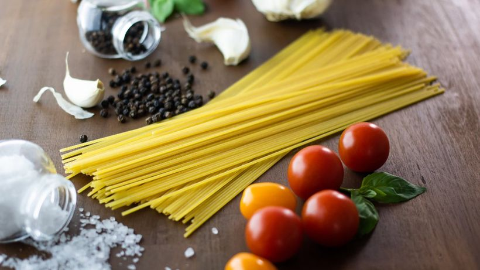

Snap your shopping and the AI turns what you've got into dinner — before any of it goes to waste.
No typing lists, no recipe rabbit-holes. Snap, ask, cook.
One photo of your shopping or your shelves — the AI reads every item in seconds. No typing, ever.
“What's for dinner?” Get real recipes built from what you've actually got — tailored to your diet.
Follow the steps, and anything you're missing drops onto a shopping list that sorts itself by aisle.
The quiet cleverness that saves the average UK home around £720 a year.
One photo of the shop or the shelves — every item recognised in seconds.
Everything's sorted by what's turning next.
Tap once — everything lands in the right place.
No meal plans. No recipe rabbit-holes. Just a photo of your fridge and meals you'll genuinely cook tonight — using what's already there.
Most of it forgotten, not spoiled (WRAP). So the app keeps an eye on it for you — and turns "about to go off" into tonight's dinner.
Snap your shop once and your whole kitchen lives in the app — always sorted by what's turning next, with a gentle nudge the day before.
Two dozen straight-talking UK guides on storage, freshness and dinner — free to read.
Sick of staring into the fridge wondering what to cook? Snap what you’ve got and get real din…
A full fridge and still nothing to eat? Just ask — get meal ideas built only from what you ac…
Fancy a specific dish but not sure what you’re missing? Name it and instantly see what you ha…
Wish someone would just talk you through dinner? Get clear, step-by-step recipes with quantit…
Vegetarian, gluten-free or a nut allergy? Set your diet once and every meal idea respects it…
A fridge full of food and still no idea what to make? Why the daily "what's for dinner" quest…
No idea what to cook tonight? A simple framework for turning whatever's in your fridge into a…
Tired of guessing what’s in your fridge? Snap your shopping and an AI fridge inventory app lo…
Tired of binning food you forgot you had? A simple fridge tracker flags what’s going off firs…
Always forget the one thing you went for? A smart shopping list that builds itself from your…
Out of coffee, again? Mark your must-haves and get flagged the moment you run low — so milk,…
The average UK home bins around £60 of food a month. Track what you have, cook what’s going o…
UK households bin a huge amount of good food every year. Here are simple, realistic habits to…
2–4 weeks opened — plus whether you can leave it out and freeze it.
3–5 days — why the fridge stales it faster, and how to freeze it.
2 days for most — the safe way to cool, store and reheat them.
Just 1 day — and why rice needs cooling within the hour.
Opened milk keeps 4–7 days — plus how to store it and freeze it.
Raw vs cooked chicken times, safe storage, and how to tell it’s off.
3–5 weeks — plus the simple float test to check an egg.
3–5 days — the trick to stop it going slimy, and how to freeze it.
Hard vs soft cheese, how to store it, and what to do about mould.
How long milk, chicken, leftovers and veg really last in the fridge — plus the right temperat…
A simple, practical way to organise your fridge — the right zones for each food, a "use first…
The cook-tonight loop costs nothing. Upgrade only if you want it to run your whole kitchen.
Set up in under a minute. Free to begin, no card needed.
Scan with your phone's camerato start — free, no card.